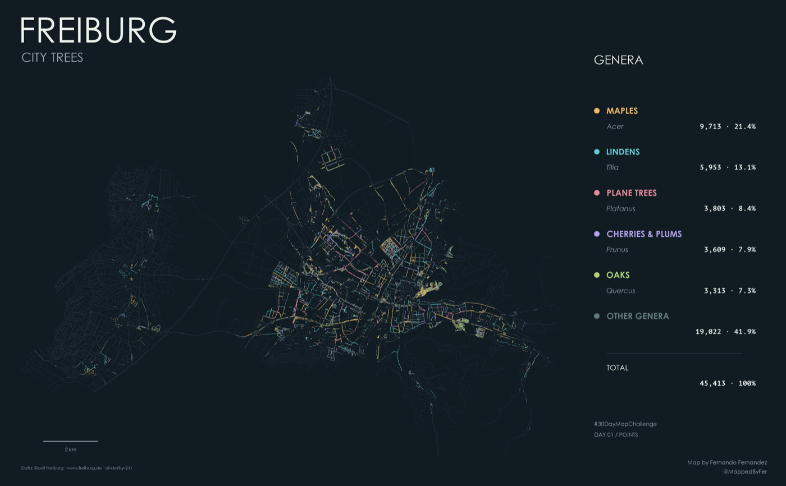

Freiburg — City Trees

A city revealed by its trees.
45,413 distinct tree inventory records trace streets, neighbourhoods and green spaces across Freiburg. The five most common botanical genera each have their own colour; all remaining genera form a sixth group. Fine grey streets provide orientation.
The idea
Explore the city through its public trees. Rather than mapping canopy cover, this composition places individual inventory records at the centre of the story. Colour reveals the distribution of maples, lindens, plane trees, cherries and plums, and oaks. Together, these five genera account for 58.1% of the mapped records.
How it was made
The official tree inventory and municipal street network were downloaded through WFS services. In R, 189 completely identical records were removed from the 45,602 source features, leaving 45,413 distinct records. Inventory numbers alone were not used for deduplication. Botanical names were grouped by genus and the five most frequent genera selected. Counts and percentages use the same records shown on the map, projected to ETRS89 / UTM zone 32N (EPSG:25832).
Sources & limitations
Trees: official Freiburg public-tree inventory. Streets: municipal street network. Both were retrieved on 1 November 2026 and are provided under Datenlizenz Deutschland – Namensnennung 2.0. The inventory covers public land managed by the municipal Garten- und Tiefbauamt; it is not a census of every tree in Freiburg. Groups represent botanical genera, not individual species. Point size does not encode tree height or canopy size, and dense points may overlap.